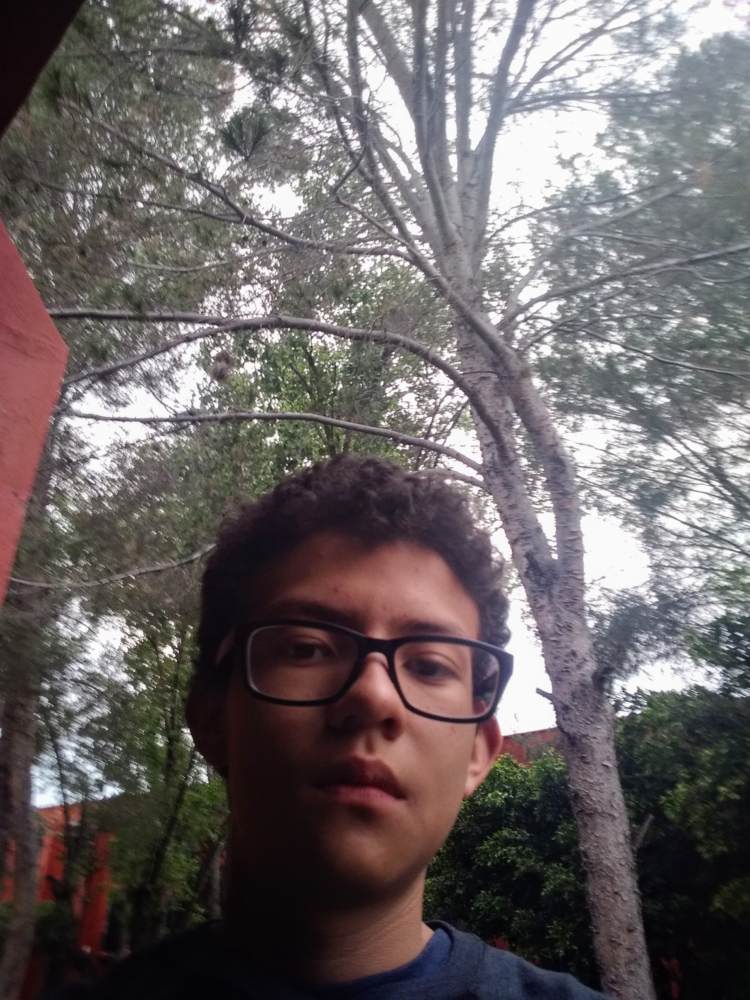

Acerca de mí
Mi nombre es Carlos Naranjo y nací el primero de junio del 2006 en la Ciudad de Mexico. Me encantan los animales ya que se me hacen muy tiernos y esponjosos así mismo me gusta mucho dibujar ya que me permite demostrar mi vision creativa. Mis metas a futuro son mantener una buena edución para llegar a ser un ingeniero en mecatronica
Ahorita mismo me gustaria llegar a mjorar mi capacidad de progamación para tener mas oportunidades laborales a futuro
